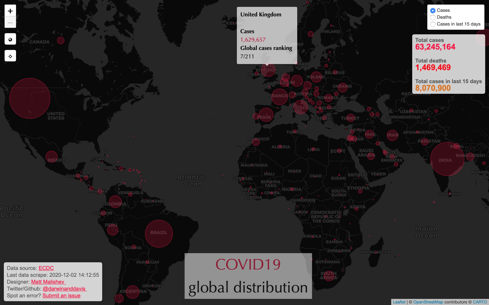
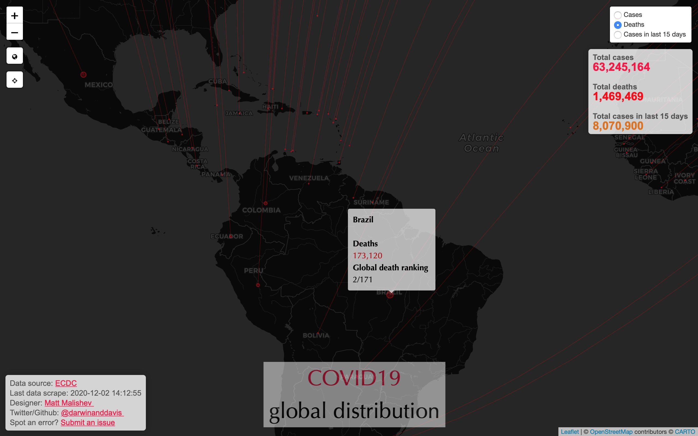
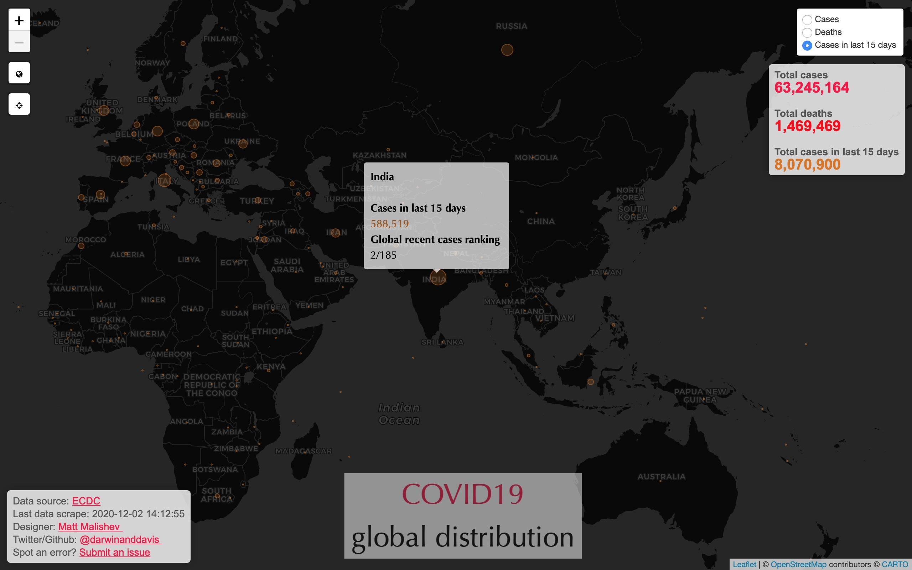

Date: 2020-12-03
Email: matthew.malishev [at] gmail.com
Github: https://github.com/darwinanddavis/ecohealth
Tasks
Build an interactive map of COVID19 coronavirus global distribution using data from the European Centre for Disease Prevention and Control (ECDC).
Data are webscraped daily from the ECDC site, then wrangled, analysed, and mapped in R, so data remain public and no internal databases are stored.
Files
ecohealth.Rproj - R project file for maintaining code and generating this document
ecohealth.R - R code for scraping, analysing, and mapping the data
cv_lonlat.csv - Georeferenced latitude and longitude centroids by country. Generated from ecohealth.R.
Data files and map are version controlled and stored on Github and the map is displayed as a separate link for easy sharing (see below).
See the Process tab for full code walkthrough.
Outcomes
Global cases per country

Global deaths per country

Global cases in the last 15 days per country

LS0tCnRpdGxlOiAiQ09WSUQxOSBjb3JvbmF2aXJ1cyBnbG9iYWwgZGlzdHJpYnV0aW9uIGJ5IGNvdW50cnkiCmF1dGhvcjogfAogfCBNYXR0IE1hbGlzaGV2CiB8IEBkYXJ3aW5hbmRkYXZpcwpoZWFkZXItaW5jbHVkZXM6IFx1c2VwYWNrYWdle2Zsb2F0fQphbHdheXNfYWxsb3dfaHRtbDogeWVzCnBhcmFtczogCiAgbGVzc29uOiAiSW5kZXgiCiAgZGF0ZTogIXIgU3lzLkRhdGUoKQogIHNlc3Npb246ICFyIHNlc3Npb25JbmZvKCkgIAogIHZlcnNpb246ICFyIGdldFJ2ZXJzaW9uKCkKICBlbWFpbDogbWF0dGhldy5tYWxpc2hldiBbYXRdIGdtYWlsLmNvbSAKICBnaXRodWI6IGh0dHBzOi8vZ2l0aHViLmNvbS9kYXJ3aW5hbmRkYXZpcy9lY29oZWFsdGgKZm9udHNpemU6IDEwCmdlb21ldHJ5OiBtYXJnaW49MWluCmRvY3VtZW50Y2xhc3M6IGFydGljbGUKbGlua2NvbG9yOiBibHVlCnVybGNvbG9yOiBibHVlCmNpdGVjb2xvcjogcGluayAKb3V0cHV0OgogIGh0bWxfZG9jdW1lbnQ6CiAgICBoaWdobGlnaHQ6IHRhbmdvCiAgICBjb2RlX2ZvbGRpbmc6IHNob3cKICAgIGNvZGVfZG93bmxvYWQ6IHRydWUKICAgIHRvYzogeWVzCiAgICB0b2NfZGVwdGg6IDUKICAgIG51bWJlcl9zZWN0aW9uczogbm8KICAgIHRvY19mbG9hdDogeWVzCmlubHVkZXM6CiAgYmVmb3JlX2JvZHk6IGJlZm9yZV9ib2R5LnRleApzdWJ0aXRsZTogCnRhZ3M6Ci0gbm90aGluZwotIG5vdGhpbmduZXNzCmNsYXNzb3B0aW9uOiBwb3J0cmFpdAp2aWduZXR0ZTogPgogICVcVmlnbmV0dGVJbmRleEVudHJ5e2Vjb2hlYWx0aH0KICAlXFZpZ25ldHRlRW5jb2Rpbmd7VVRGLTh9CiAgJVxWaWduZXR0ZUVuZ2luZXtrbml0cjo6cm1hcmtkb3dufQotLS0KCjwhLS0gLS0tLS0tLS0tLS0tLS0tLS0tLS0tLS0tLS0tLS0tLS0tLS0tLS0tLS0tLS0tIC0tPgo8IS0tIHJtZCBzZXR0aW5ncyAtLS0tLS0tLS0tLS0tLS0tLS0tLS0tLS0tLS0tLS0tLSAtLT4KCjwhLS0gZXF1YXRpb24gcmVuZGVyaW5nIC0tPgo8c2NyaXB0IHR5cGU9InRleHQveC1tYXRoamF4LWNvbmZpZyI+CiAgTWF0aEpheC5IdWIuQ29uZmlnKHsgVGVYOiB7IGVxdWF0aW9uTnVtYmVyczoge2F1dG9OdW1iZXI6ICJhbGwifSB9IH0pOwo8L3NjcmlwdD4KCmBgYHtyLCBzZXQtb3B0aW9ucywgZWNobyA9IEYsIGNhY2hlID0gRn0Kb3B0aW9ucyh3aWR0aD0xMDApCmtuaXRyOjpvcHRzX2NodW5rJHNldCgKIGV2YWwgPSBGLCAjIHJ1biBhbGwgY29kZQogZWNobyA9IFQsICMgc2hvdyBjb2RlCiBjb21tZW50ID0gIiIsCiB0aWR5Lm9wdHM9bGlzdCh3aWR0aC5jdXRvZmY9MTAwKSwgIyBzZXQgd2lkdGggb2YgY29kZSBjaHVua3MKIHRpZHkgPSBULCAjIG1ha2Ugb3V0cHV0IGFzIHRpZHkKIG1lc3NhZ2UgPSBGLCAgIyBtYXNrIGFsbCBtZXNzYWdlcwogd2FybmluZyA9IEYsICMgbWFzayBhbGwgd2FybmluZ3MgCiBzaXplPSJzbWFsbCIsICMgc2V0IGNvZGUgY2h1bmsgc2l6ZQoga25pdHI6Om9wdHNfY2h1bmskc2V0KGZpZy5wb3MgPSAnSCcpCikKIyBybWFya2Rvd246OnJlbmRlcl9zaXRlKCkgIyByZW5kZXIgZW50aXJlIHNpdGUKYGBgCgo8IS0tIC0tLS0tLS0tLS0tLS0tLS0tLS0tLS0tLS0tLS0tLS0tLS0tLS0tLS0tLS0tLSAtLT4KPCEtLSBiZWdpbiBkb2MgLS0tLS0tLS0tLS0tLS0tLS0tLS0tLS0tLS0tLS0tLS0gLS0+CgpcbmV3cGFnZSAgCgoqKioqKiogICAgICAKCkRhdGU6IGByIHBhcmFtcyRkYXRlYCAgCkVtYWlsOiBgciBwYXJhbXMkZW1haWxgICAKR2l0aHViOiBgciBwYXJhbXMkZ2l0aHViYCAgCgojIyBUYXNrcwoKQnVpbGQgYW4gaW50ZXJhY3RpdmUgbWFwIG9mIENPVklEMTkgY29yb25hdmlydXMgZ2xvYmFsIGRpc3RyaWJ1dGlvbiB1c2luZyBkYXRhIGZyb20gdGhlIEV1cm9wZWFuIENlbnRyZSBmb3IgRGlzZWFzZSBQcmV2ZW50aW9uIGFuZCBDb250cm9sIChFQ0RDKS4gCgpEYXRhIGFyZSB3ZWJzY3JhcGVkIGRhaWx5IGZyb20gdGhlIEVDREMgc2l0ZSwgdGhlbiB3cmFuZ2xlZCwgYW5hbHlzZWQsIGFuZCBtYXBwZWQgaW4gYFJgLCBzbyBkYXRhIHJlbWFpbiBwdWJsaWMgYW5kIG5vIGludGVybmFsIGRhdGFiYXNlcyBhcmUgc3RvcmVkLiAKCiMjIEZpbGVzICAKYGVjb2hlYWx0aC5ScHJvamAgLSBgUmAgcHJvamVjdCBmaWxlIGZvciBtYWludGFpbmluZyBjb2RlIGFuZCBnZW5lcmF0aW5nIHRoaXMgZG9jdW1lbnQgICAgICAgCmBlY29oZWFsdGguUmAgLSBgUmAgY29kZSBmb3Igc2NyYXBpbmcsIGFuYWx5c2luZywgYW5kIG1hcHBpbmcgdGhlIGRhdGEgICAKYGN2X2xvbmxhdC5jc3ZgIC0gR2VvcmVmZXJlbmNlZCBsYXRpdHVkZSBhbmQgbG9uZ2l0dWRlIGNlbnRyb2lkcyBieSBjb3VudHJ5LiBHZW5lcmF0ZWQgZnJvbSBgZWNvaGVhbHRoLlJgLiAgICAgICAgIAoKRGF0YSBmaWxlcyBhbmQgbWFwIGFyZSB2ZXJzaW9uIGNvbnRyb2xsZWQgYW5kIHN0b3JlZCBvbiBHaXRodWIgYW5kIHRoZSBtYXAgaXMgZGlzcGxheWVkIGFzIGEgc2VwYXJhdGUgbGluayBmb3IgZWFzeSBzaGFyaW5nIChzZWUgYmVsb3cpLiAgICAgICAgICAKClNlZSB0aGUgKipQcm9jZXNzKiogdGFiIGZvciBmdWxsIGNvZGUgd2Fsa3Rocm91Z2guICAgICAKCiMjIE91dGNvbWVzICAKCiMjIyBbQ2xpY2sgZm9yIGZ1bGwgaW50ZXJhY3RpdmUgbWFwXShodHRwczovL2RhcndpbmFuZGRhdmlzLmdpdGh1Yi5pby93b3JsZG1hcHMvY29yb25hdmlydXMuaHRtbCkgICAgICAgIAoKXCAgCgojIyMjIEdsb2JhbCBjYXNlcyBwZXIgY291bnRyeSAgCiFbXShpbWcvMS5qcGcpClwgICAKCiMjIyMgR2xvYmFsIGRlYXRocyBwZXIgY291bnRyeSAgICAgIAohW10oaW1nLzIuanBnKSAgICAKClwgICAgCgojIyMjIEdsb2JhbCBjYXNlcyBpbiB0aGUgbGFzdCAxNSBkYXlzIHBlciBjb3VudHJ5ICAgIAohW10oaW1nLzMuanBnKSAgICAK